Build an estimate: sections, materials, add-ons
In the office app, press Help and type build an estimate
: the tour plays on your own screen, with your own data.
-
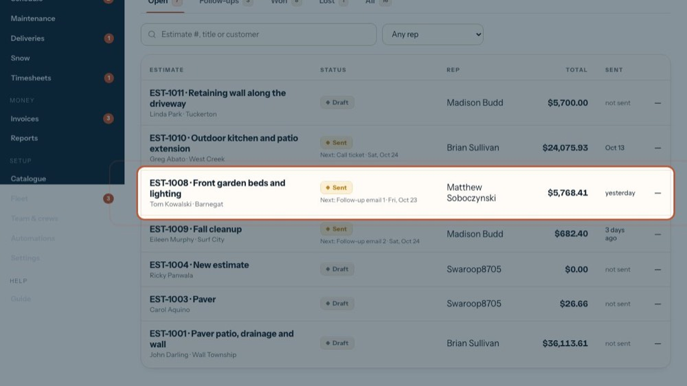
1Open an estimate
Sections are built on the estimate. The tour opens this one.
-
 2
2The section bar
Each section is one line on the estimate. Its bar holds the name, the tax switch, the section total and the tools to fold, move or remove it.
-
 3
3Fold it away
The arrow folds a section to one line so a long estimate is easy to read. The tax switch and the total stay visible.
-
4
Section name
What the customer reads as the line title, e.g. Paver patio. Every section needs a name before you can save.
-
5
Taxable or Tax exempt
One click switches it; the sales tax follows. The Taxable tick inside the section does the same. Catalogue services bring their own setting.
-
 6
6Section total
Quantity × labor price, plus every material line at its price. It updates as you type.
-
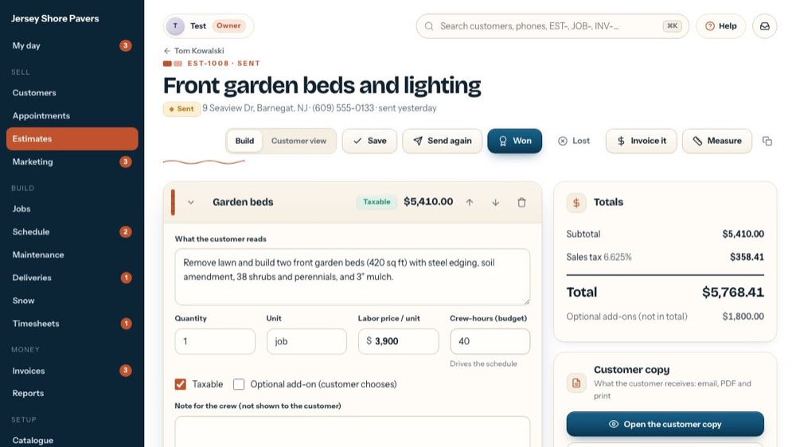
7Move up or down
The arrows change the order the customer reads the sections in. Nothing is deleted.
-
8
Remove a section
Takes the section and its materials off (it asks first). Nothing is final until you press Save.
-
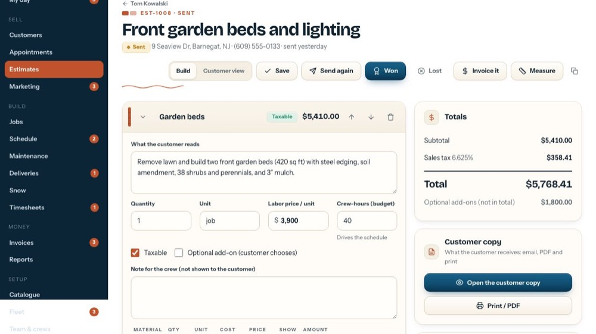
9What the customer reads
Describe the work in plain words. This text is printed under the section name on the estimate.
-
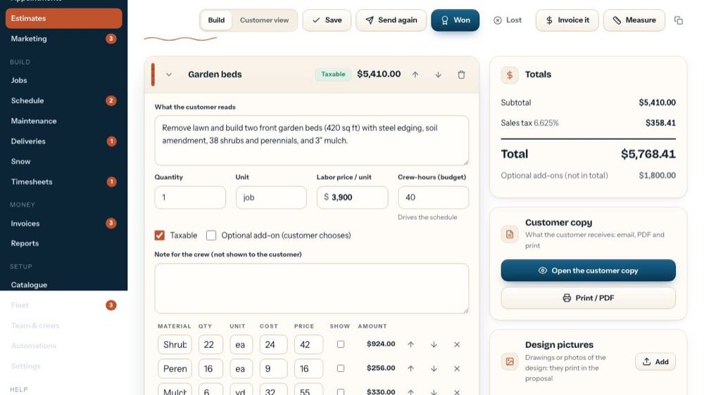
10Quantity and unit
How many, and of what (sq ft, job, ea, ft). After you measure, "Use a measurement" buttons appear here and fill both in one click.
-
 11
11Labor price per unit
Your price for the work, per unit. The materials below are added on top.
-
12
Crew-hours (budget)
How long the crew needs. It sizes the job on the Schedule and feeds the Margin card.
-
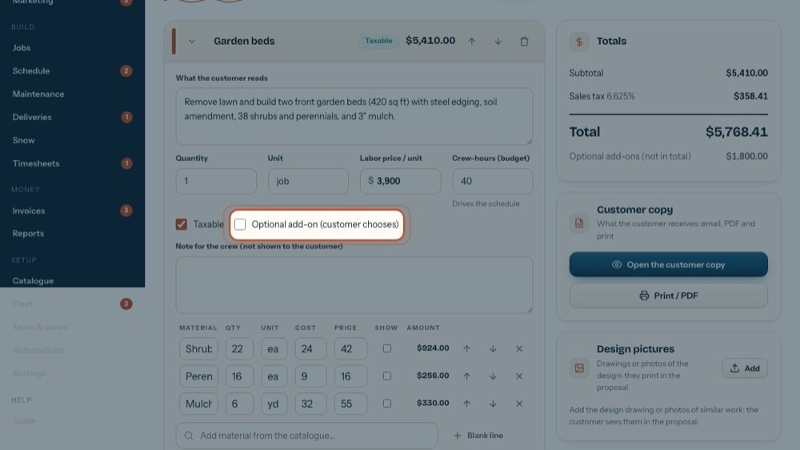
13Optional add-on
Tick it for an extra the customer can choose, like lighting. It's priced apart and kept out of the total until they take it.
-
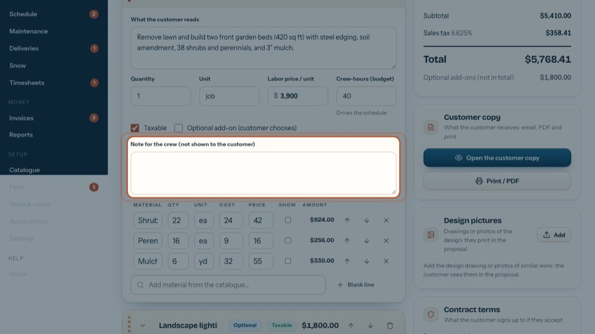
14Note for the crew
Gas line, access, where to dump spoils… It goes on the job and the work order, never on the customer's copy.
-
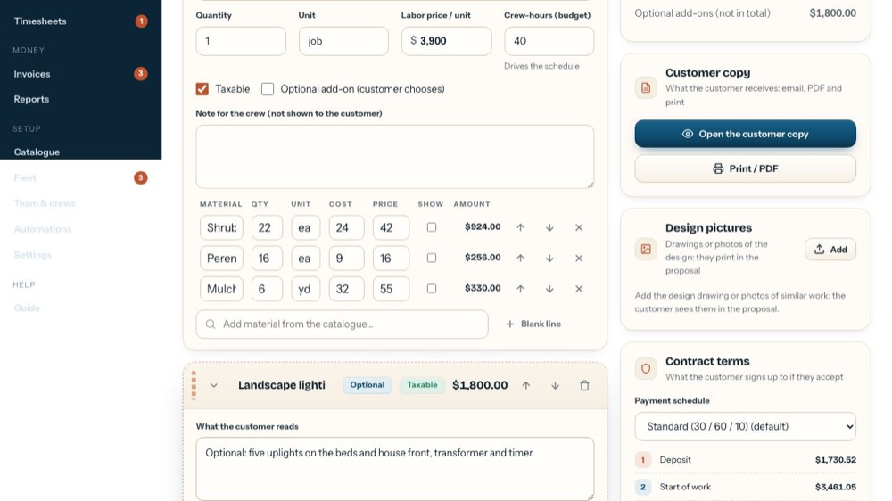
15Materials
Material, quantity, unit, your cost, the customer's price and the line amount. Cost stays inside the office; it drives the margin.
-
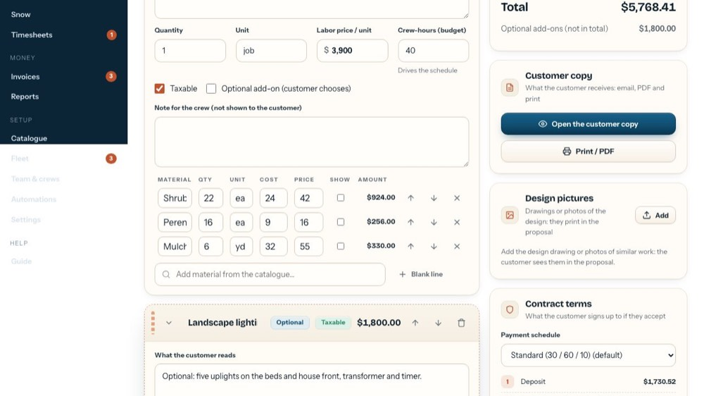
16Hidden or shown lines
Unticked (the default), a line is hidden: the customer sees only the section total. Tick Show to list it on their copy, without its price.
-
17
Reorder or remove lines
The arrows move a line up or down; the x removes it.
-
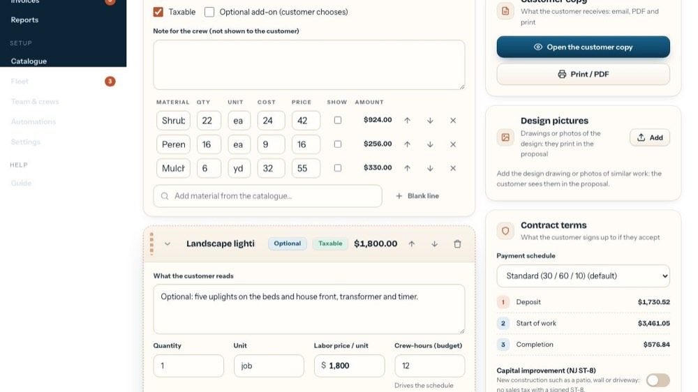
18Add a material
Search the catalogue by name or category and pick one: it comes in with its unit, cost and price.
-
19
Blank line
For a material that isn't in the catalogue: type the name, quantity, cost and price yourself.
-
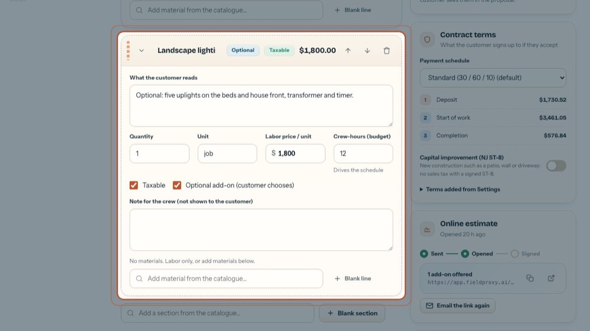
20An optional add-on
Dashed and marked Optional. The customer ticks it on the online link, or you tick it when you press Won.
-
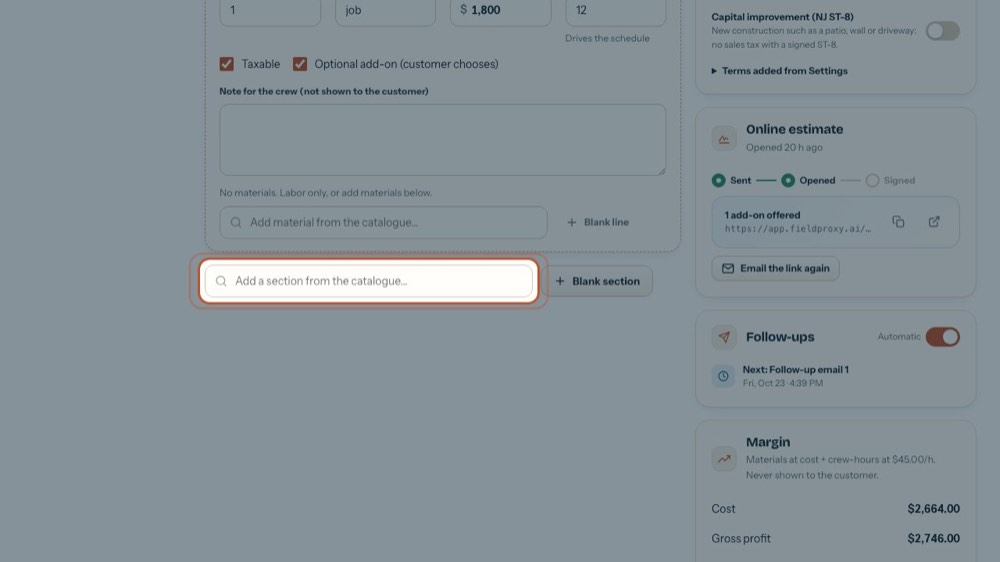
21Add a section from the catalogue
Pick a service: it brings its price, unit, crew-hours and tax setting, plus its kit of materials (hidden unless the kit says show).
-
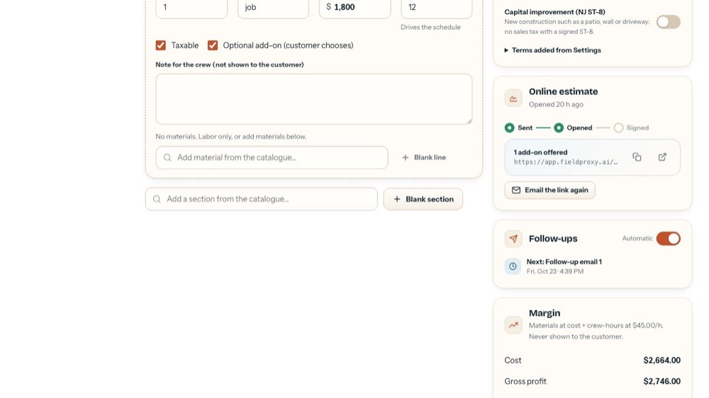
22Blank section
An empty section to fill in yourself.
-
 23
23Totals
Subtotal, sales tax on the taxable sections and the total, plus "Optional add-ons (not in total)".
-
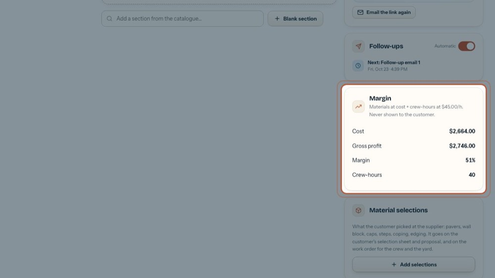
24Margin
Cost, gross profit, margin % and crew-hours, as you build. Never shown to the customer.
-
 25
25Save it
Nothing is kept until you press Save (or ⌘S / Ctrl+S); "Unsaved changes" reminds you. The tour doesn't save.